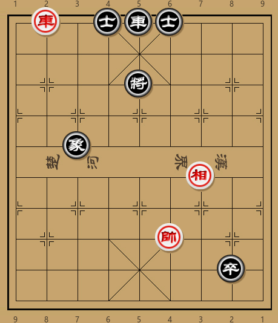
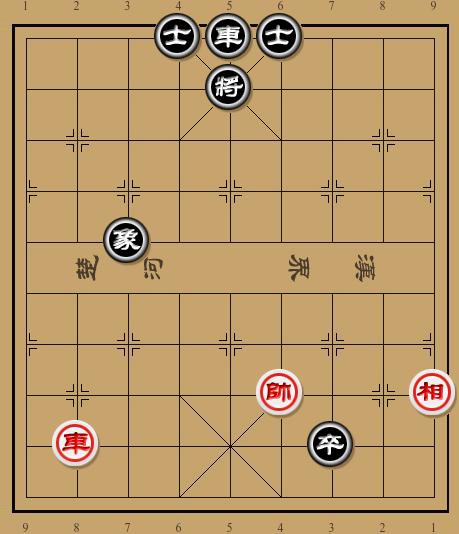
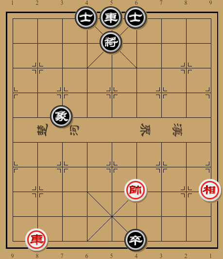
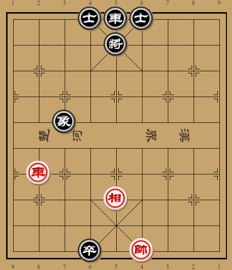

One minute
排局-04

1R1ara3/9/4k4/9/2b6/6B2/9/5K3/7p1/9 w
如图形势，红方进攻子力仅有一车，如何才能利用黑车的位置取得胜利？
最直观的思路并不能奏效：
- 车八退三 士６进５
- 车八平五 将５平４
- 帅四平五 将４退１
- 车五平六 士５进４
虽然黑方篡位车位置尴尬，但这样直接叫吃还是太过急躁．同样，如果直接车八退八，确实可以吃掉黑卒，但红方并不能取得胜利．
正确的走法是先将黑将打到二楼，然后退车捉卒：
- 车八退二 将５退１
- 车八退六
此时黑方虽然没有丢车之虞，但也无法疏通子力．当然不能回中象，否则红方车八进七绝杀．将５平４躲避会被红方车八平六先手带将吃掉卒，上将则会送车．所以黑方只有躲卒．这里有一个小陷阱，就是黑方卒８平７送吃：
- …… 卒８平７
- 车八平三 象３退５
- 车三平八 将５平４
红方无法取胜，和棋
红方急于吃卒，但车被自己的高相挡住，黑方侥幸某得和局．细看之下，死卒不急吃，红方没有必要立刻杀卒，可以先落边相给车通头．
- 相三退一

接下来，黑卒走投无路，红方可以将其吃掉并且保持车通头，已成胜势．具体的胜方可以参考后文着法．
黑方较为顽强的抵抗是卒８进１沉底：
- 车八退二 将５退１
- 车八退六 卒８进１
- 车八退一 卒８平７！
- 相三退一 卒７平６！
黑方先将卒沉底，然后平移进入红方九宫，如入无人之境．红方为了保持车通头，竟然不能简单将其杀掉．如下图形势，红方如帅四退一捉卒，黑方可以卒６平５占中！红方车八平五杀卒叫将则象３退５，进而某得和局．

那红方怎样才能取得胜利呢？这里红方需要切换一下进攻思路，不再用车捉卒，而是采用排局中常见的捉弄底卒的方式来将其擒获．正着初看之下有点不可思议，红方不仅不吃卒，还主动抬车；并且抬车的方式必须是车八进三或进四，连看起来更有威胁的车八进六都不行：
- 车八进三 卒６平５
- 相一进三 卒５平４
- 相三退五 卒４平５
- 帅四退一 卒５平４
- 帅四退一

以上着法对于排局爱好者并不陌生，首先运相回中路让黑卒无法离开九宫，然后下帅挤掉其仅有的活动空间．此时黑方只有动将，而对红方来说，取得胜利已经不再困难：
- …… 将５平４
- 车八平六 将４平５
- 车六进三 卒４平５
红方叫将后进车点穴，黑方无子可动．其实黑方的高象也是有意为之，如果黑方是底象，没有这一手塞象眼，红方还是无法取得胜利．此时只有方弃卒一搏，不过仍难免一败：
- 帅四平五 将５平６
- 车六平四 将６平５
- 帅五平四 将５平４
- 车四平六 将４平５
- 相五进七 红胜定
如果黑方先出将，则红方先车八平六叫将然后车六进三点穴．黑卒还是会被困死．细心的读者可能已经发现前面为什么只能车八进三或进四，不能直接进六．否则，由于不需要进车点穴，差了一步棋．换句话说，最后单双步不对，并不能困死黑卒．
本局的精妙之处在于借捉卒之机另其自陷虎口，转而运相退帅将其困毙，颇有声动击西之妙．现在看来，最开始的那句＂红方进攻子力仅有一车＂也需商榷，因为在排局中，士相甚至老帅都可以用来进攻．